Chapter 3. Geometrical Optics & Photons
Part 3: Geometrical Optics
1. Optical Path
Optical Path: $\Delta = ct = nvt = ns$
Optical Path Difference: $\delta = n_1 s_1 - n_2 s_2$
(Speed of light $c = \frac{1}{\sqrt{\epsilon_0 \mu_0}}$, $v = \frac{1}{\sqrt{\epsilon\mu}}$, $n = \sqrt{\epsilon_r\mu_r}$)
Fermat's Principle: Light travels along the path with the shortest or longest optical path, $\int_A^B n ds = \text{extremum}$.
2. Reflection of Light
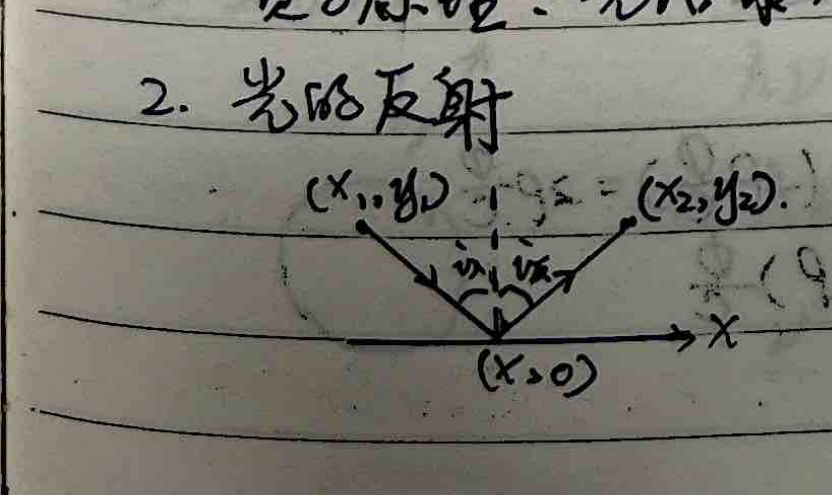
Let points be $(x_1, y_1)$ and $(x_2, y_2)$ and the point of reflection be $(x, 0)$.
$$ \Delta = n \sqrt{(x_1-x)^2+y_1^2} + n \sqrt{(x_2-x)^2+y_2^2} $$ $$ \frac{d\Delta}{dx} = n\frac{1}{2}\frac{2(x_1-x)(-dx)}{\sqrt{(x_1-x)^2+y_1^2}} + n\frac{1}{2}\frac{2(x_2-x)(-dx)}{\sqrt{(x_2-x)^2+y_2^2}} = 0 $$ $$ \therefore \frac{x-x_1}{\sqrt{(x-x_1)^2+y_1^2}} = \frac{x_2-x}{\sqrt{(x_2-x)^2+y_2^2}} $$ $$ \therefore \sin i_1 = \sin i_2 $$3. Refraction of Light
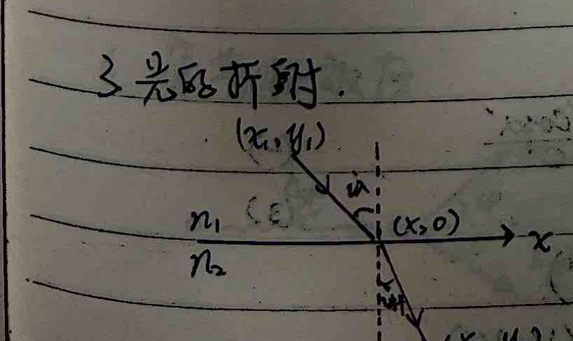
$$ \Delta = n_1 \sqrt{(x_1-x)^2+y_1^2} + n_2 \sqrt{(x_2-x)^2+y_2^2} $$ $$ \frac{d\Delta}{dx} = n_1 \frac{1}{2}\frac{-2(x_1-x)dx}{\sqrt{(x_1-x)^2+y_1^2}} + n_2 \frac{1}{2}\frac{-(x_2-x)dx}{\sqrt{(x_2-x)^2+y_2^2}} = 0 $$ $$ \therefore n_1 \frac{x-x_1}{\sqrt{(x-x_1)^2+y_1^2}} = n_2 \frac{x_2-x}{\sqrt{(x_2-x)^2+y_2^2}} $$ $$ \therefore \sin i_1 \cdot n_1 = \sin i_2 \cdot n_2 $$4. Total Internal Reflection
$\frac{\sin i_1}{\sin i_2} = \frac{n_2}{n_1}$. When $\sin i_2 = 1$, i.e., the angle of refraction is $90^\circ$, total internal reflection occurs.
At this time $\sin\alpha = \frac{n_2}{n_1}$, $\alpha = \arcsin \frac{n_2}{n_1}$ ($n_1 = \frac{c}{v_1}$, the optically denser medium has larger $n$, the optically rarer medium has smaller $n$).
Special Topic: Photons
1. Theoretical Foundation
$$ E = h\nu, \quad P = \frac{h\nu}{c} = \frac{h}{\lambda} $$ $$ \because E^2 = P^2 c^2 + m_0^2 c^4 \text{, and } m_0 = 0 \quad \therefore P = \frac{E}{c} $$ $$ \because m = \frac{m_0}{\sqrt{1-v^2/c^2}} = \sqrt{\frac{E^2-P^2c^2}{c^4}}{\frac{c^2-v^2}{c^2}} = \frac{\sqrt{E^2-P^2c^2}}{c\sqrt{c^2-v^2}} = \frac{\sqrt{h^2\nu^2-P^2c^2}}{c\sqrt{c^2-v^2}} $$ $$ = \sqrt{\frac{\frac{h^2c^2}{\lambda^2}-m^2c^4}{c^2(c^2-v^2)}} = \sqrt{\frac{\frac{h^2}{\lambda^2}-m^2c^2}{c^2-v^2}} $$ $$ \therefore m^2(c^2-v^2) = \frac{h^2}{\lambda^2} - m^2c^2 \quad \therefore m^2(2c^2-v^2) = \frac{h^2}{\lambda^2} $$ $$ \because v = c, \quad \therefore m = \frac{h}{c\lambda} = \frac{h\nu}{c^2} \quad \text{This is the dynamic mass of the photon.} $$2. Light Pressure
Momentum of a group of photons $P = \frac{Nh\nu}{c} = \frac{\Phi}{c}$
If the reflection coefficient of the wall is $\rho$, then $\Delta I_1 = P\frac{\Phi}{c} - (-P\frac{\Phi}{c}) = 2\rho\frac{\Phi}{c}$.
The remaining $(1-\rho)N$ photons are absorbed by the wall, then $\Delta I_2 = (1-\rho)\frac{\Phi}{c}$.
$$ \therefore \text{Light Pressure } = \Delta I_1 + \Delta I_2 = (1+\rho)\frac{\Phi}{c} $$3. Derivation of the Law of Reflection
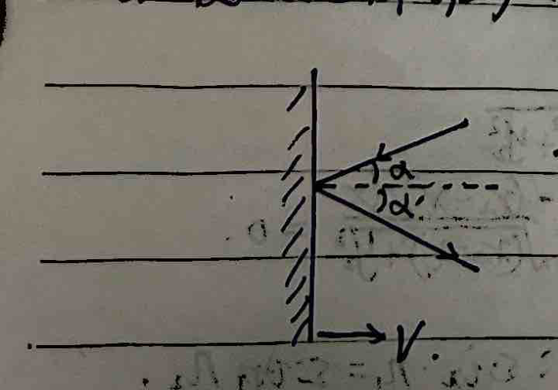
$$ \begin{cases} h\nu + \frac{1}{2}MV^2 = h\nu' + \frac{1}{2}MV'^2 \quad (1) \\ MV - \frac{h\nu\cos\alpha}{c} = MV' + \frac{h\nu'\cos\alpha'}{c} \quad (2) \\ \frac{h\nu\sin\alpha}{c} = \frac{h\nu'\sin\alpha'}{c} \quad (3) \end{cases} $$From (1) we get $h(\nu-\nu') = \frac{1}{2}M(V'^2-V^2)$
From (2) we get $\frac{h}{c}(\nu\cos\alpha + \nu'\cos\alpha') = M(V-V')$
$$ \therefore c\frac{\nu-\nu'}{\nu\cos\alpha + \nu'\cos\alpha'} = \frac{1}{2}(V+V') \approx V $$From (3) we get $\nu' = \frac{\sin\alpha}{\sin\alpha'}\nu$, substitute into the above equation:
$$ V = \frac{\frac{\sin\alpha}{\sin\alpha'}-1}{\cos\alpha + \frac{\sin\alpha}{\sin\alpha'}\cos\alpha'} c = \frac{\sin\alpha-\sin\alpha'}{\sin\alpha'\cos\alpha+\sin\alpha\cos\alpha'} c = \frac{\sin\alpha-\sin\alpha'}{\sin(\alpha+\alpha')} c $$ $$ \text{i.e. } \sin\alpha - \sin\alpha' = \beta \sin(\alpha+\alpha') \text{. If } V \text{ is in the opposite direction, then } \sin\alpha - \sin\alpha' = \beta\sin\alpha\sin(\alpha+\alpha') $$4. Redshift Velocity Measurement
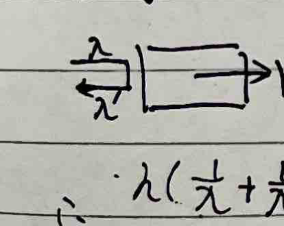
$$ \begin{cases} \frac{h}{\lambda} + MV = -\frac{h}{\lambda'} + MV' \\ \frac{hc}{\lambda} + \frac{1}{2}MV^2 = \frac{hc}{\lambda'} + \frac{1}{2}MV'^2 \end{cases} $$ $$ \therefore h(\frac{1}{\lambda} + \frac{1}{\lambda'}) = M(V'-V) $$ $$ \therefore hc(\frac{1}{\lambda} - \frac{1}{\lambda'}) = \frac{1}{2}M(V'^2-V^2) $$ $$ \therefore c \frac{\frac{1}{\lambda}-\frac{1}{\lambda'}}{\frac{1}{\lambda}+\frac{1}{\lambda'}} = \frac{1}{2}(V'+V) \approx V $$ $$ \therefore V = \frac{\lambda'-\lambda}{\lambda'+\lambda} c $$Define redshift $Z = \frac{\lambda'-\lambda}{\lambda}$, $\therefore V = (\frac{Z}{2+Z}) c$
5. Gravitational Redshift
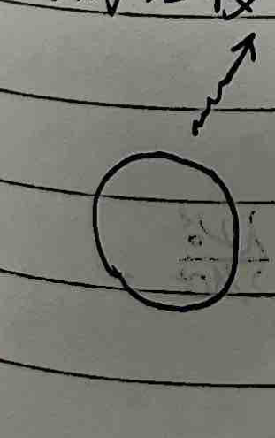
$$ h\nu - \frac{GmM}{r} = h\nu' - \frac{GmM}{r'} $$ $$ \therefore h\nu(1 - \frac{GM}{c^2r}) = h\nu'(1 - \frac{GM}{c^2r'}) $$ $$ \therefore \nu' = \frac{1 - \frac{GM}{c^2r}}{1 - \frac{GM}{c^2r'}} \nu $$6. Compton Effect
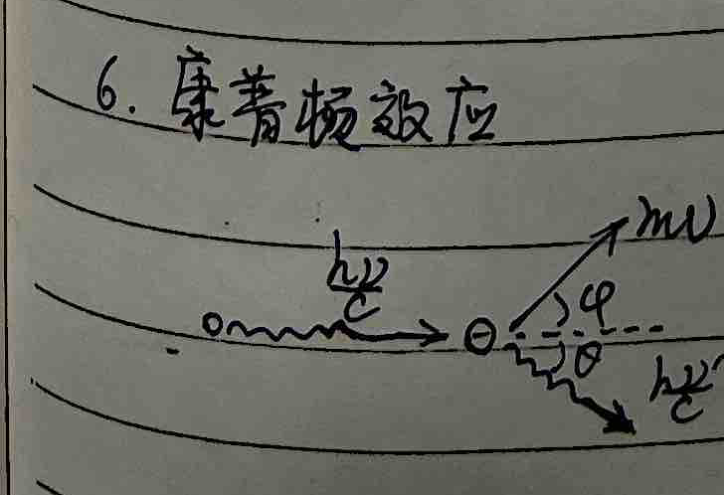
From conservation of momentum and the law of cosines:
$$ (mv)^2 = (\frac{h\nu}{c})^2 + (\frac{h\nu'}{c})^2 - 2\frac{h\nu}{c}\frac{h\nu'}{c}\cos\theta $$From conservation of energy:
$$ m_0c^2 + h\nu = mc^2 + h\nu' $$From $m = \frac{m_0}{\sqrt{1-v^2/c^2}}$, we get $m^2c^2 = m^2v^2 + m_0^2c^2$. $\therefore (mc^2)^2 = (mv)^2c^2 + m_0^2c^4$.
Substitute the previous two equations into this equation:
$$ (m_0c^2 + h\nu - h\nu')^2 = \left[ (\frac{h\nu}{c})^2 + (\frac{h\nu'}{c})^2 - \frac{2h^2\nu\nu'\cos\theta}{c^2} \right] c^2 + m_0^2c^4 $$Expanding yields: $m_0^2c^4 + 2m_0c^2h(\nu-\nu') + h^2(\nu-\nu')^2 = h^2\nu^2 + h^2\nu'^2 - 2h^2\nu\nu'\cos\theta + m_0^2c^4$
$$ \therefore m_0c^2(\nu-\nu') = h\nu\nu'(1-\cos\theta) $$ $$ \therefore \frac{\nu-\nu'}{\nu\nu'} \approx \frac{\Delta\nu}{\nu^2} = \frac{2h}{m_0c^2}\sin^2\frac{\theta}{2} $$7. Atomic Emission Recoil
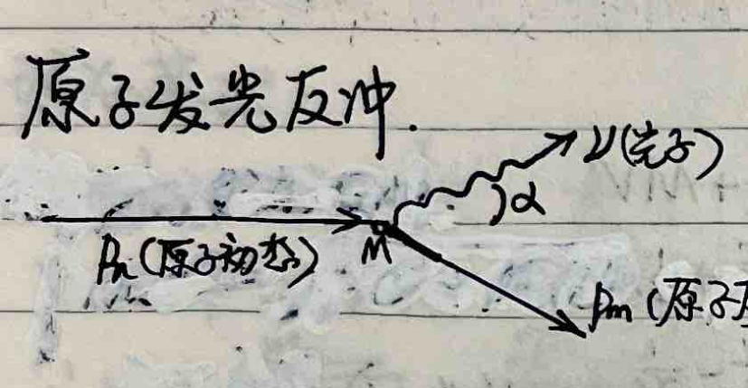
Neglecting the change in atomic mass, from conservation of energy and conservation of momentum, we get:
$$ \begin{cases} \frac{P_n^2}{2M} + E_n = \frac{P_m^2}{2M} + E_m + h\nu \\ P_m^2 = P_n^2 + P^2 - 2P_n P\cos\alpha \end{cases} $$ $$ \therefore \nu = \frac{E_n-E_m}{h} + \frac{2P_n P}{2Mh}\cos\alpha - \frac{P^2}{2Mh} \quad (\because P_n = Mv_n, P = \frac{h\nu}{c}) $$ $$ \therefore \nu = \nu_0 + \frac{v_n}{c}\nu\cos\alpha - \frac{h\nu^2}{2Mc^2} \approx \nu_0 + \frac{v_n}{c}\nu_0\cos\alpha - \frac{h\nu_0^2}{2Mc^2} $$The first term is the Bohr frequency.
The second term is the Doppler effect. When $v_n = 0$, this term is zero. $\nu = \nu_0 - \frac{h\nu_0^2}{2Mc^2}$.
The third term is the result of atomic recoil.
5. Mirror Imaging
① Plane Mirror:
Determine the number of virtual images: Let the object emit a light ray to each mirror, let the light ray reflect between the mirrors until it exits the system. The reverse extension of each reflected ray must pass through a virtual image.
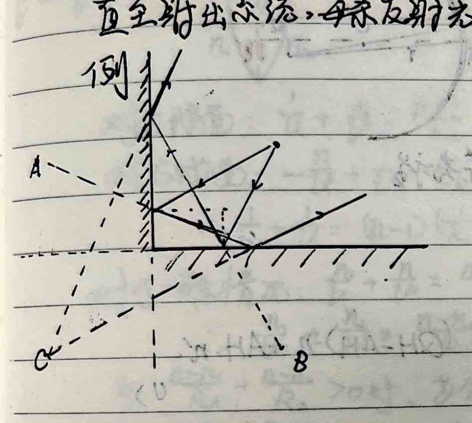
Real Image: The image formed by the convergence of actual light rays.
Virtual Image: The image formed by the convergence of the backward extensions of light rays.
② Spherical Mirror:
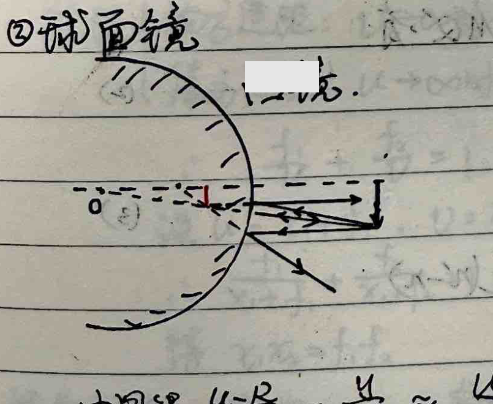
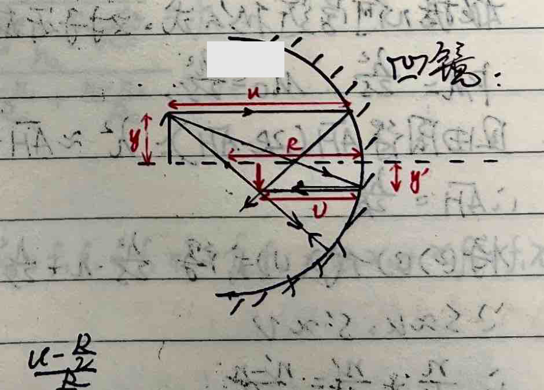
From the figure, $\frac{y}{-v} = \frac{y'}{u} \approx \frac{u-R+\frac{R}{2}}{\frac{R}{2}} = \frac{u-\frac{R}{2}}{\frac{R}{2}}$
$$ \text{Yields } \frac{1}{u} + \frac{1}{v} = \frac{2}{R} = \frac{1}{f} \quad (f = \frac{R}{2} \text{, paraxial approximation}) $$Sign Convention: Object is in front of the mirror (the side that can reflect light), $u > 0$; object is behind the mirror, $u < 0$.
Real image, $v > 0$; Virtual image, $v < 0$ (Do not add signs when calculating, determine the sign after solving).
Concave mirror $f > 0$; Convex mirror $f < 0$.
Magnification: Magnification of an upright image
$$ K = \frac{y'}{y} = \frac{v-R}{u-R} = \frac{v - \frac{2uv}{u+v}}{u - \frac{2uv}{u+v}} = \frac{v^2-uv}{u^2-uv} = -\frac{v}{u} $$ $$ \text{i.e. } K = -\frac{v}{u} $$6. Lens Imaging
① Single Spherical Surface Refraction
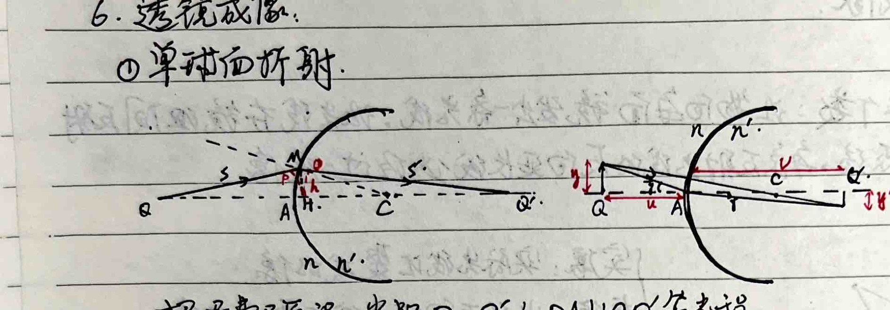
According to Fermat's principle, the optical path of ray $QMQ'$ is equal to that of $QAHCQ'$.
$$ \therefore QU \cdot n + MQ \cdot n' = QA \cdot n + AQ' \cdot n' $$ $$ \because QH \approx QP, \quad Q'H \approx Q'O $$ $$ \therefore QP \cdot n + PM \cdot n + MO \cdot n' = QA \cdot n + AH \cdot n' = (QH-AH)n + AH \cdot n' $$ $$ \therefore PM \cdot n + MO \cdot n' = AH(n'-n) \quad (1) $$According to the paraxial approximation formula in geometry, for the paraxial ray $QMQ'$:
$$ PM \approx \frac{h^2}{2u}, \quad MO \approx \frac{h^2}{2v} \quad (2) $$And from the intersecting chords theorem $AH(2R-AH) = h^2 \approx AH \cdot 2R$
$$ \therefore AH = \frac{h^2}{2R} \quad (3) $$Substituting (2) and (3) into (1) gives $\frac{h^2}{2u} n + \frac{h^2}{2v} n' = \frac{h^2}{2R}(n'-n)$
$$ \because s \approx u, \quad s' \approx v $$ $$ \therefore \frac{n}{u} + \frac{n'}{v} = \frac{n'-n}{R} $$Focal length: $\begin{cases} \text{Object focal length: } v \to \infty, u = \frac{Rn}{n'-n} = f_1 \\ \text{Image focal length: } u \to \infty, v = \frac{Rn'}{n'-n} = f_2 \end{cases}$
Sign Convention: The order of $n'-n$ in the formula is unchanged, only the signs of $u, v, R$ change.
$$ \begin{cases} Q \text{ (object) is to the left of vertex } A, u > 0, \text{ otherwise negative.} \\ Q' \text{ (image) is to the right of vertex } A, v > 0, \text{ otherwise negative.} \\ C \text{ (center of curvature) is to the right of } A, \text{defined as } R > 0, \text{ otherwise negative.} \end{cases} $$Magnification: $K = \frac{y'}{y} = -\frac{v/n'}{u/n} = -\frac{nv}{n'u}$.
② Thin Lens Imaging
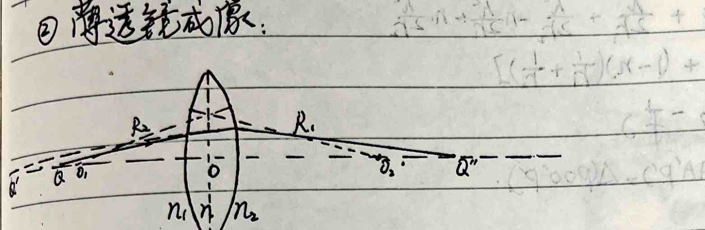
For the left spherical surface: $\frac{n_1}{u} + \frac{n}{v_1} = \frac{n-n_1}{R_1}$
For the right spherical surface: $-\frac{n}{v_1} + \frac{n_2}{v} = \frac{n_2-n}{R_2}$
$$ \therefore \frac{n_1}{u} + \frac{n_2}{v} = (n-1)\left(\frac{1}{R_1} + \frac{1}{R_2}\right) \quad (\text{Special case: } n_1 = n_2 = 1, f = \frac{1}{(n-1)(\frac{1}{R_1}+\frac{1}{R_2})}) $$For the general case: $\frac{n_1}{u} + \frac{n_2}{v} = \frac{n-n_1}{R_1} - \frac{n_2-n}{-R_2}$
$$ \therefore \frac{n_1}{u} + \frac{n_2}{v} = \frac{n-n_1}{R_1} + \frac{n-n_2}{R_2} $$When $\frac{n-n_1}{R_1} + \frac{n-n_2}{R_2} > 0$, it is a converging lens, conversely a diverging lens.
Focal length: $\begin{cases} \text{Object focal length: } v \to \infty, u = \frac{n_1}{\frac{n-n_1}{R_1} + \frac{n-n_2}{R_2}} = f_1 \\ \text{Image focal length: } u \to \infty, v = \frac{n_2}{\frac{n-n_1}{R_1} + \frac{n-n_2}{R_2}} = f_2 \end{cases}$
$$ \therefore \frac{f_1}{u} + \frac{f_2}{v} = 1 $$Let $u = x_1 + f_1$, $v = x_2 + f_2$
$$ \therefore \frac{f_1}{x_1+f_1} + \frac{f_2}{x_2+f_2} = 1 \implies f_1 x_2 + f_1 f_2 + f_2 x_1 + f_2 f_1 = x_1 x_2 + x_1 f_2 + f_1 x_2 + f_1 f_2 $$ $$ \text{Yields } x_1 x_2 = f_1 f_2 $$Sign Convention: Real object $u > 0$, virtual object $u < 0$. Real image $v > 0$, virtual image $v < 0$. Convex lens $f > 0$, concave lens $f < 0$.
Magnification: $K = K_1 \cdot K_2 = \left(-\frac{v_1/n}{u/n_1}\right) \cdot \left(-\frac{v/n_2}{-v_1/n}\right) = -\frac{n_1 v}{n_2 u}$.
Proof of equal optical path for paraxial rays in thin lenses:
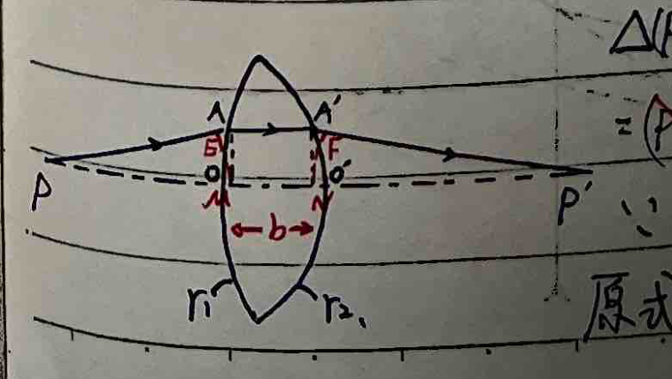
$$ \Delta(PAA'P') - \Delta(POO'P') = (PA + n \cdot AA' + A'P') - (PO + n \cdot OO' + O'P') $$ $$ = (PE + EA + n \cdot AA' + A'F + FP') - [PM - OM + n(OM + MN + NO) + NP' - NO'] $$$\because P'A' \approx MN = b, \quad PE \approx PM, \quad P'F \approx P'N$
$$ \text{Original expression } = EA + A'F + OM + NO' - n \cdot OM - n \cdot NO' $$ $$ \approx \frac{h^2}{2 \cdot PA} + \frac{h^2}{2 \cdot P'A'} + \frac{h^2}{2r_1} + \frac{h^2}{2r_2} - n\frac{h^2}{2r_1} - n\frac{h^2}{2r_2} $$ $$ = \frac{h^2}{2} \left[ \frac{1}{u} + \frac{1}{v} + (1-n)\left(\frac{1}{r_1} + \frac{1}{r_2}\right) \right] = \frac{h^2}{2} \left( \frac{1}{u} + \frac{1}{v} - \frac{1}{f} \right) = 0 $$ $$ \therefore \Delta(PAA'P') = \Delta(POO'P') $$Proof of $\Delta \approx \frac{h^2}{2s}$:
$$ \because \sqrt{s^2-h^2} = s - \Delta $$ $$ \therefore s^2 - h^2 = s^2 - 2s\Delta + \Delta^2 $$ $$ \because \Delta^2 \approx 0 \quad \therefore \Delta = \frac{h^2}{2s} $$③ Graphical Method
1) Characteristic Ray Method:
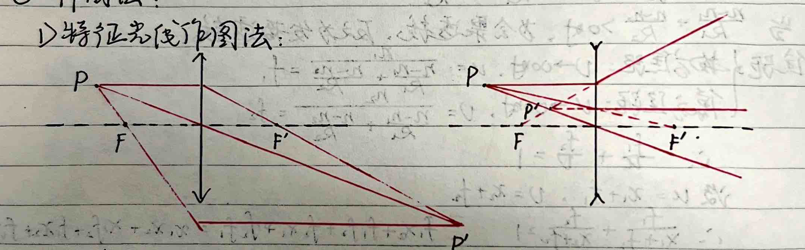
2) Arbitrary Ray Method:
Rays parallel to the secondary optical axis pass through the intersection of the focal plane and the secondary optical axis after refraction by the lens.
Explanation: Treat $M$ as a real object. Since it is on the focal plane, it cannot form an image. This means the rays emitted from it must be parallel to the ray passing through the optical center after refraction. As shown in the figure:
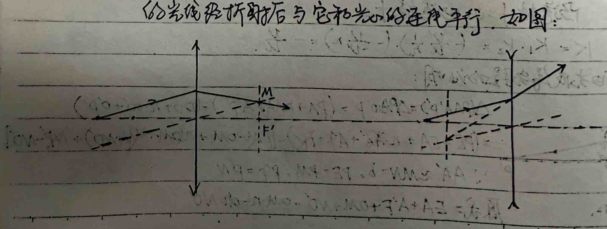
Special Topic: Silvered Lenses
1. Plano-Convex Thin Lens (Radius $R$, Refractive Index $n$)
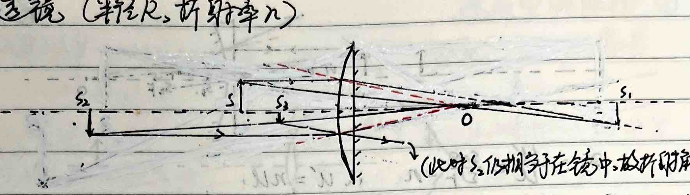
(The diagram shows the plane surface silvered, and the ray enters from the convex surface).
$$ \frac{1}{u} + \frac{n}{v_1} = \frac{n-1}{R}, \text{ after reflection } u' = -v_1 \implies -\frac{n}{v_1} + \frac{1}{v} = \frac{1-n}{-R} \text{ (positive direction reversed)} $$ $$ \text{Solving yields } v = \frac{1}{-\frac{1}{u} + \frac{2(n-1)}{R}} $$ $$ \text{Magnification } K = \left(-\frac{v_1/n}{u/1}\right) \cdot \left(-\frac{v/1}{-v_1/n}\right) = -\frac{v}{u} $$Focal length: When parallel light enters:
$$ \begin{cases} \frac{1}{\infty} + \frac{n}{v_1} = \frac{n-1}{R} \\ -\frac{n}{v_1} + \frac{1}{f} = \frac{1-n}{-R} \end{cases} \implies f = \frac{R}{2(n-1)} $$2. Plano-Concave Thin Lens (Radius $R$, Refractive Index $n$)
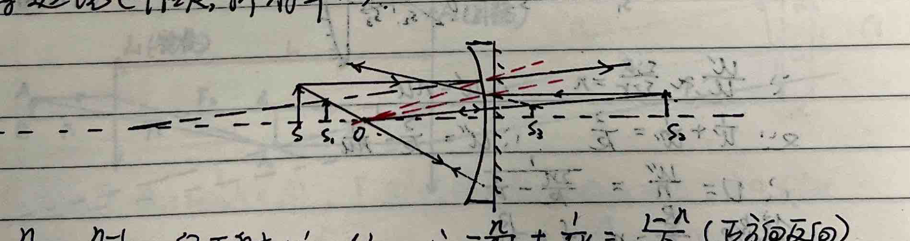
$$ \frac{1}{u} + \frac{n}{v_1} = \frac{n-1}{-R}, \text{ after reflection } u' = -v_1 \implies -\frac{n}{v_1} + \frac{1}{v} = \frac{1-n}{R} \text{ (positive direction reversed)} $$ $$ \text{Solving yields } v = \frac{1}{-\frac{1}{u} - \frac{2(n-1)}{R}} $$ $$ \text{Magnification } K = \left(-\frac{v_1/n}{u/1}\right) \cdot \left(-\frac{v/1}{-v_1/n}\right) = -\frac{v}{u} $$Focal length: When parallel light enters:
$$ \begin{cases} \frac{1}{\infty} + \frac{n}{v_1} = \frac{n-1}{-R} \\ -\frac{n}{v_1} + \frac{1}{f} = \frac{1-n}{R} \end{cases} \implies f = -\frac{R}{2(n-1)} $$3. Plano-Convex Thin Lens (Curved Surface Silvered)
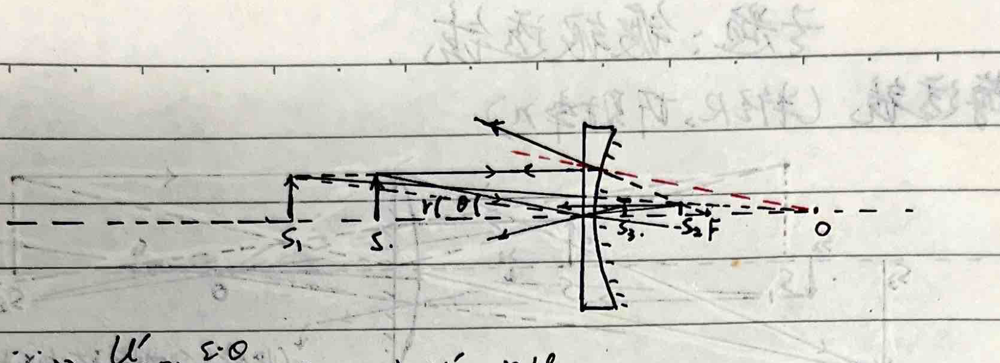
$$ \because \frac{v_1}{u} \approx \frac{v_1/n}{u/1} = n \implies u' = nu $$ $$ \text{Or: } \frac{1}{u} + \frac{n}{v_1} = \frac{n-1}{\infty} = 0 \implies v_1 = -nu, \quad \therefore u' = -v_1 = nu $$ $$ \because \frac{n}{u'} + \frac{n}{v''} = -\frac{2n}{-R} \implies \frac{1}{v''} = -\frac{2}{R} - \frac{1}{u'} $$ $$ \because v = \frac{v''}{n} = \frac{1}{n} \left( -\frac{2}{R} - \frac{1}{nu} \right)^{-1} $$ $$ \text{Focal length: } \frac{1}{f} \approx n\left(-\frac{2}{R}\right) \implies f = -\frac{R}{2n} $$ $$ \text{Magnification: } K = -\frac{v''}{u'} = \frac{nv}{nu} \dots \implies K = -\frac{v}{u} $$4. Plano-Concave Thin Lens (Curved Surface Silvered)
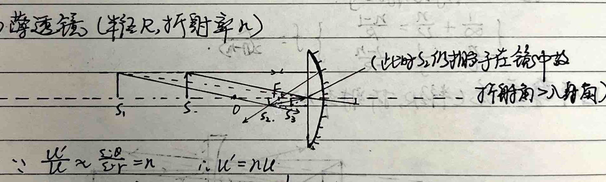
$$ \because \frac{v_1}{u} \approx \frac{v_1/n}{u/1} = n \implies u' = nu $$ $$ \text{Or: } \frac{1}{u} + \frac{n}{v_1} = 0 \implies v_1 = -nu, \quad \therefore u' = -v_1 = nu $$ $$ \because \frac{n}{u'} + \frac{n}{v''} = \frac{2n}{R} \implies \frac{1}{v''} = \frac{2}{R} - \frac{1}{u'} $$ $$ \because v = \frac{v''}{n} = \frac{1}{n} \left( \frac{2}{R} - \frac{1}{nu} \right)^{-1} $$ $$ \text{Focal length: } \frac{1}{f} \approx n\left(\frac{2}{R}\right) \implies f = \frac{R}{2n} $$ $$ \text{Magnification: } K = -\frac{v''}{u'} = \dots \implies K = -\frac{v}{u} $$5. Convexo-Concave Thin Lens (Radius $R_1, R_2$, Refractive Index $n$)
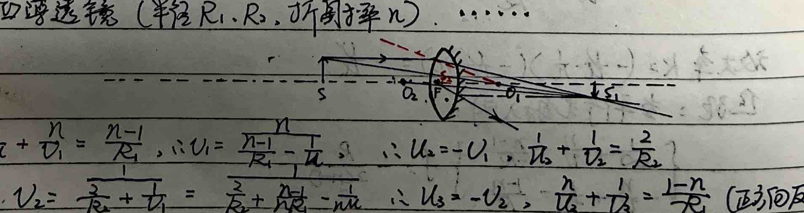
$$ \frac{1}{u} + \frac{n}{v_1} = \frac{n-1}{R_1}, \quad u_2 = -v_1, \quad \frac{n}{u_2} + \frac{n}{v_2} = -\frac{2n}{R_2} $$ $$ u_3 = -v_2, \quad \frac{n}{u_3} + \frac{1}{v} = \frac{1-n}{-R_1} \text{ (positive direction reversed)} $$ $$ \therefore \frac{1}{v} = \frac{2(n-1)}{R_1} + \frac{2n}{R_2} - \frac{1}{u} $$ $$ \text{Focal length: } u \to \infty, \quad f = \frac{1}{\frac{2(n-1)}{R_1} + \frac{2n}{R_2}} $$ $$ \text{Magnification: } K = \left(-\frac{v_1/n}{u/1}\right) \left(-\frac{v_2/n}{-v_1/n}\right) \left(-\frac{v/1}{-v_2/n}\right) = -\frac{v}{u} $$7. Optical Instruments
① Human Eye
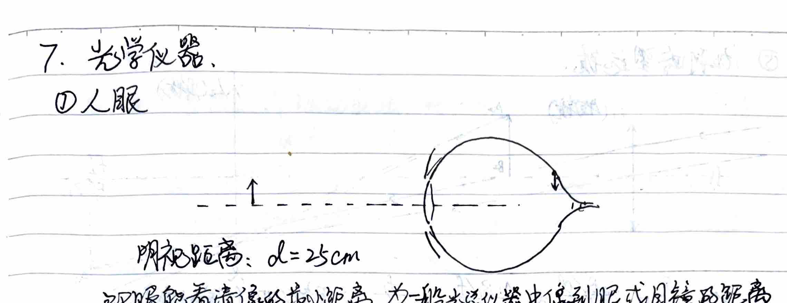
Distance of distinct vision: $d = 25\text{cm}$
This is the minimum distance at which the eye can see an image clearly. It is generally the distance from the image to the eye or eyepiece in optical instruments.
② Magnifying Glass
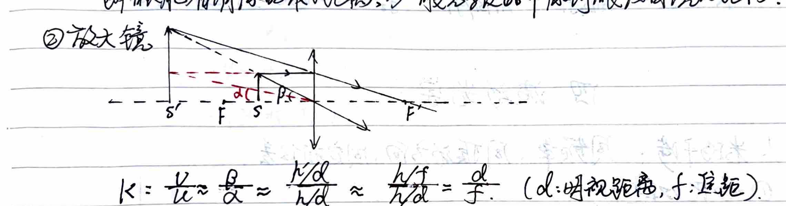
$$ K = \frac{\beta}{\alpha} \approx \frac{\tan\beta}{\tan\alpha} \approx \frac{y/f}{y/d} = \frac{d}{f} \quad (d: \text{distance of distinct vision}, f: \text{focal length}) $$③ Microscope
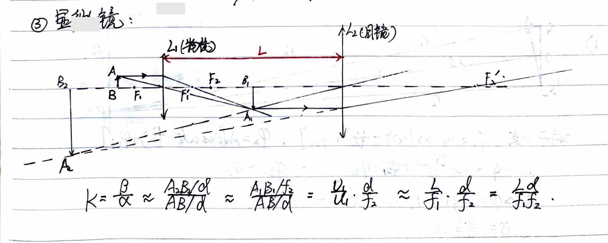
$$ K = \frac{\beta}{\alpha} \approx \frac{A_2 B_2 / d}{AB / d} \approx \frac{A_1 B_1 / f_2}{AB / d} = \frac{v_1}{u_1} \cdot \frac{d}{f_2} \approx \frac{L}{f_1} \cdot \frac{d}{f_2} = \frac{L d}{f_1 f_2} $$④ Keplerian Telescope
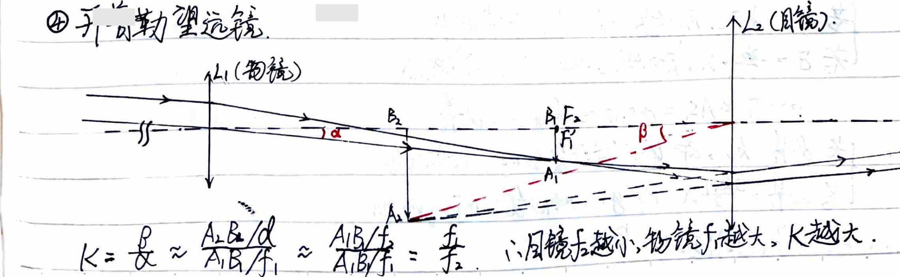
$$ K = \frac{\beta}{\alpha} \approx \frac{A_1 B_1 / f_2}{A_1 B_1 / f_1} \approx \frac{f_1}{f_2} \quad \therefore \text{The smaller the eyepiece } f_2 \text{ and the larger the objective } f_1, \text{ the larger } K \text{ is.} $$⑤ Galilean Telescope
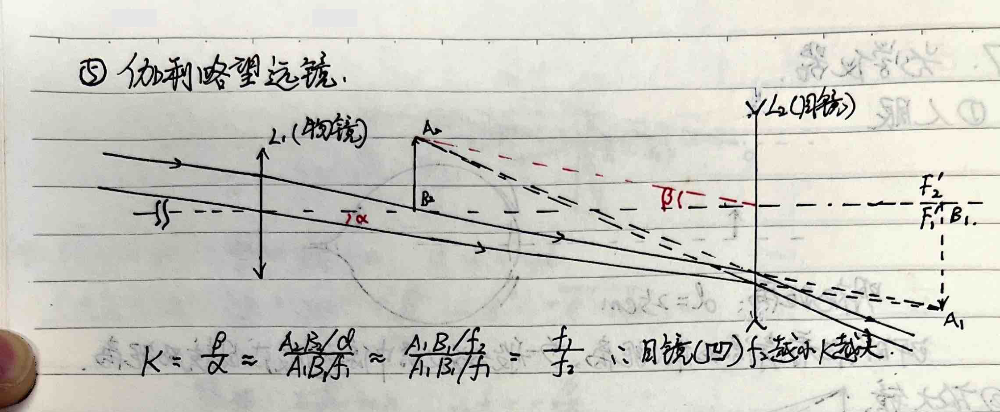
$$ K = \frac{\beta}{\alpha} \approx \frac{A_1 B_1 / f_2}{A_1 B_1 / f_1} \approx \frac{f_1}{f_2} \quad \therefore \text{The smaller the eyepiece } f_2, \text{ the larger } K \text{ is.} $$Part 4: Wave Optics
1. Interference of Light: Same frequency, same direction of vibration, fixed phase difference.
① Young's Double Slit Interference
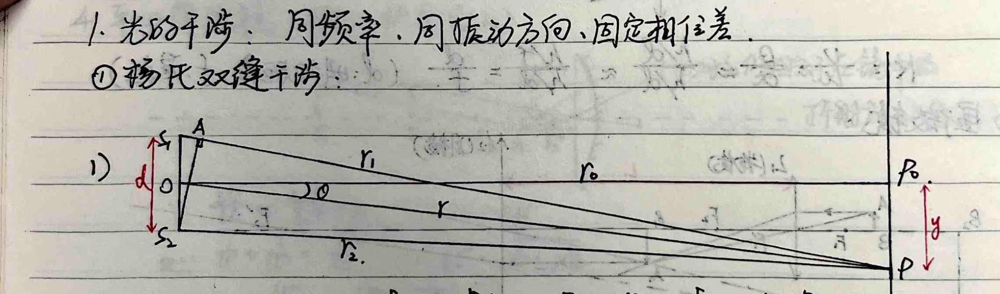
For point P, $\varphi_1 = A_1 \cos(\omega t - \frac{r_1}{v}) + \varphi_{01}, \quad \varphi_2 = A_2 \cos(\omega t - \frac{r_2}{v}) + \varphi_{02}$
$$ \therefore \Delta\varphi = \omega \frac{r_2-r_1}{v} + \varphi_{01} - \varphi_{02} $$ $$ \because \varphi_{01} = \varphi_{02} \quad \therefore \Delta\varphi = \frac{\omega}{v}(r_2-r_1) = \frac{2\pi}{\lambda}(r_2-r_1) = \frac{2\pi}{\lambda}\delta $$ $$ \therefore \delta = \frac{\Delta\varphi}{2\pi}\lambda $$ $$ \begin{cases} \text{If } \delta = k\lambda, \text{ i.e. } \frac{\Delta\varphi}{2\pi} = k, \text{ constructive interference.} \\ \text{If } \delta = \frac{2k+1}{2}\lambda, \text{ i.e. } \frac{\Delta\varphi}{2\pi} = \frac{2k+1}{2}, \text{ destructive interference.} \end{cases} $$ $$ \text{Also } \delta \approx \Delta s_1 = d\sin\theta \approx d\tan\theta = d\frac{y}{r_0} $$ $$ \therefore \begin{cases} \text{If } d\frac{y}{r_0} = k\lambda, \text{ i.e. } y = k\frac{r_0\lambda}{d}, \text{ constructive interference.} \\ \text{If } d\frac{y}{r_0} = \frac{2k+1}{2}\lambda, \text{ i.e. } y = \frac{2k+1}{2}\frac{r_0\lambda}{d}, \text{ destructive interference.} \end{cases} $$ $$ \therefore \text{Distance between bright/dark fringes } \Delta y = \frac{r_0\lambda}{d}. $$2) Exact Solution:
If point P has constructive interference, i.e., maximum vibration, then the distance difference from P to the two point sources $S_1, S_2$ is
$$ \delta = 2k \cdot \frac{\lambda}{2} \quad (k = 0, 1, 2 \dots) $$If $\lambda$ is constant, then $\delta$ is a constant. The locus of points with a constant distance difference to two fixed points is a hyperbola. The two light sources are the two foci of the hyperbola. With the line connecting $S_1 S_2$ as the y-axis, and the perpendicular bisector $OP_0$ as the x-axis:
$$ \because 2a = \delta = 2k \cdot \frac{\lambda}{2} \quad \therefore a = k\frac{\lambda}{2} $$ $$ \text{Also } c = \frac{d}{2} $$ $$ \therefore \frac{y^2}{(k\lambda/2)^2} - \frac{x^2}{(d/2)^2 - (k\lambda/2)^2} = 1 $$ $$ \text{When } x = r_0, \quad y = \pm k\frac{\lambda}{2} \sqrt{1 + \frac{r_0^2}{(d/2)^2 - (k\lambda/2)^2}} $$Similarly, if point P has destructive interference, i.e., minimum vibration, we have:
$$ \frac{y^2}{(\frac{2k+1}{2}\frac{\lambda}{2})^2} - \frac{x^2}{(d/2)^2 - (\frac{2k+1}{2}\frac{\lambda}{2})^2} = 1 $$ $$ \text{When } x = r_0, \quad y = \pm \frac{2k+1}{2}\frac{\lambda}{2} \sqrt{1 + \frac{r_0^2}{(d/2)^2 - (\frac{2k+1}{2}\frac{\lambda}{2})^2}} $$② Fresnel Biprism Interference
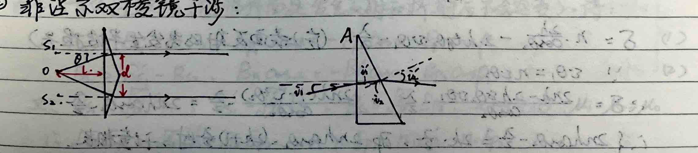
Take the upper half as the object of study: $n\sin i_1' \approx ni_1', \quad n\sin i_2' \approx ni_2', \quad i_1' + i_2' = A$.
$$ \therefore \theta = (i_1 - i_1') + (i_2 - i_2') \approx (n-1)i_1' + (n-1)i_2' = (n-1)A $$ $$ \text{Also } \theta \approx \frac{d/2}{l} \quad \therefore d = 2l(n-1)A $$ $$ \therefore \begin{cases} 2l(n-1)A \cdot \frac{y}{L+l} = k\lambda, \text{ constructive interference.} \\ 2l(n-1)A \cdot \frac{y}{L+l} = \frac{2k+1}{2}\lambda, \text{ destructive interference.} \end{cases} $$ $$ \Delta y = \frac{L+l}{2l(n-1)A} \cdot \lambda $$③ Newton's Rings Interference
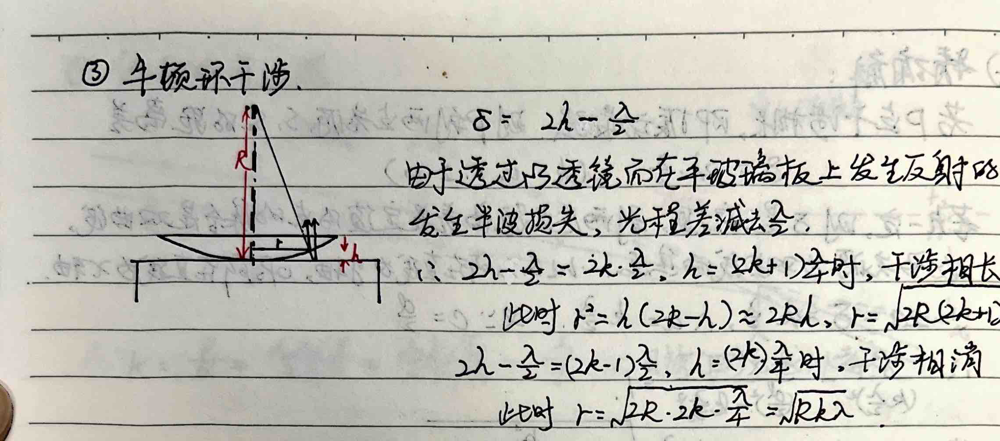
$$ \delta = 2h - \frac{\lambda}{2} $$(Because the light reflecting off the flat glass plate after passing through the convex lens undergoes a half-wave loss, the optical path difference decreases by $\frac{\lambda}{2}$.)
$$ \therefore \begin{cases} 2h - \frac{\lambda}{2} = 2k \cdot \frac{\lambda}{2}, \text{ i.e. } h = (2k+1)\frac{\lambda}{4}, \text{ constructive interference.} \\ \quad \text{At this time } r^2 = h(2R-h) \approx 2Rh, \quad r = \sqrt{2R(2k+1)\frac{\lambda}{4}} \\ 2h - \frac{\lambda}{2} = (2k-1)\frac{\lambda}{2}, \text{ i.e. } h = (2k)\frac{\lambda}{4}, \text{ destructive interference.} \\ \quad \text{At this time } r = \sqrt{2R \cdot 2k \frac{\lambda}{4}} = \sqrt{Rk\lambda} \end{cases} $$④ Thin Film Interference
1) Equal Inclination Interference (Parallel light obliquely incident on a glass plate with parallel faces)
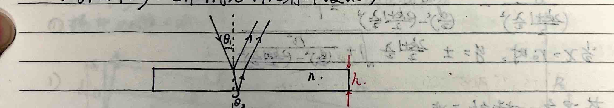
$$ \delta = n \cdot \frac{2h}{\cos\theta_2} - 2h\tan\theta_2\sin\theta_1 - \frac{\lambda}{2} \quad \text{(Light reflecting on the upper surface undergoes half-wave loss)} $$ $$ \because \sin\theta_1 = n\sin\theta_2 $$ $$ \therefore \delta = \frac{2nh - 2nh\sin^2\theta_2}{\cos\theta_2} - \frac{\lambda}{2} = \frac{2nh(1-\sin^2\theta_2)}{\cos\theta_2} - \frac{\lambda}{2} = 2nh\cos\theta_2 - \frac{\lambda}{2} $$ $$ \therefore \begin{cases} 2nh\cos\theta_2 - \frac{\lambda}{2} = 2k \cdot \frac{\lambda}{2}, \text{ i.e. } 2nh\cos\theta_2 = (2k+1)\frac{\lambda}{2}, \text{ constructive interference.} \\ 2nh\cos\theta_2 - \frac{\lambda}{2} = (2k-1)\frac{\lambda}{2}, \text{ i.e. } 2nh\cos\theta_2 = 2k\frac{\lambda}{2}, \text{ destructive interference.} \end{cases} $$2) Equal Thickness Interference (Parallel light perpendicularly incident on a glass plate with a small angle of inclination)
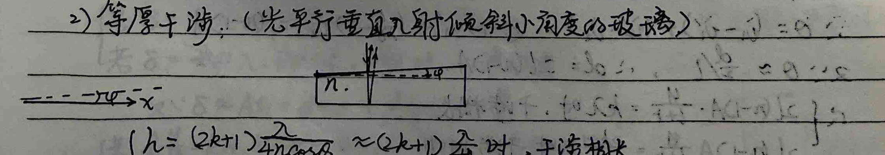
$$ \begin{cases} h = (2k+1)\frac{\lambda}{4n\cos\theta_2} \approx (2k+1)\frac{\lambda}{4n}, \text{ constructive interference.} \\ h = 2k \cdot \frac{\lambda}{4n\cos\theta_2} \approx 2k \cdot \frac{\lambda}{4n}, \text{ destructive interference.} \end{cases} $$ $$ \therefore \Delta h = \frac{\lambda}{2n}, \quad \Delta x = \frac{\Delta h}{\sin\phi} \approx \frac{\Delta h}{\phi} = \frac{\lambda}{2n\phi}. $$The distance between adjacent bright fringes is $\Delta x = \frac{\lambda}{2n\phi}$.
⑤ Fresnel Equations
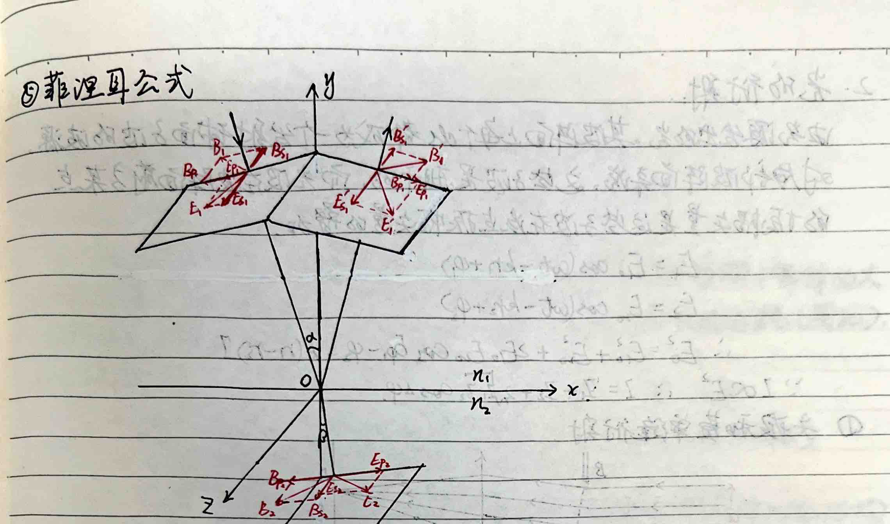
The velocity $\vec{v}$, electric vector $\vec{E}$, and magnetic vector $\vec{B}$ of the incident, reflected, and refracted light form a right-handed spiral relationship.
In the figure, $\vec{v}, \vec{v}_1, \vec{v}_2$ are known. Once a set of $\vec{E}_1, \vec{E}_2, \vec{E}_3$ or $\vec{B}_1, \vec{B}_2, \vec{B}_3$ is arbitrarily given, the other set can be given by decomposing each vector into components.
From the continuity of the components (they do not change abruptly after reflection and refraction at the interface), we get:
$$ E_{s1} = E_{s1}' + E_{s2}, \quad E_{p1}\cos\alpha = -E_{p1}'\cos\alpha - E_{p2}\cos\beta \quad (1) $$ $$ B_{s1} = B_{s1}' - B_{s2}, \quad B_{p1}\cos\alpha = -B_{p1}'\cos\alpha + B_{p2}\cos\beta \quad (2) $$ $$ \text{Also } \because B_{s1} = \sqrt{\epsilon_1\mu_1} E_{p1}, \quad B_{s1}' = \sqrt{\epsilon_1\mu_1} E_{p1}', \quad B_{s2} = \sqrt{\epsilon_2\mu_2} E_{p2}. \quad \text{For light waves, } \mu_1 = \mu_2 = \mu_0. $$ $$ \therefore \sqrt{\epsilon_1} E_{p1} = \sqrt{\epsilon_1} E_{p1}' - \sqrt{\epsilon_2} E_{p2} \implies n_1 E_{p1} = n_1 E_{p1}' - n_2 E_{p2} $$ $$ \text{Also } \because n_1 \sin\alpha = n_2 \sin\beta \quad \therefore E_{p1} = E_{p1}' - \frac{\sin\beta}{\sin\alpha} E_{p2} \quad (3) $$Combining (1) and (3) yields $E_{p1}\cos\alpha = -\cos\alpha\left(E_{p1} + \frac{\sin\beta}{\sin\alpha} E_{p2}\right) - E_{p2}\cos\beta$
$$ \therefore \frac{E_{p2}}{E_{p1}} = -\frac{2\cos\alpha \sin\beta}{\sin\alpha\cos\alpha + \sin\beta\cos\beta} = -\frac{2\cos\alpha \sin\beta}{\frac{1}{2}(\sin 2\alpha + \sin 2\beta)} = -\frac{2\cos\alpha \sin\beta}{\sin(\alpha+\beta)\cos(\alpha-\beta)} $$Similarly, $E_{p1}\cos\alpha = -E_{p1}'\cos\alpha - \frac{\sin\alpha}{\sin\beta}(E_{p1} - E_{p1}')\cos\beta$
$$ \therefore \frac{E_{p1}'}{E_{p1}} = \frac{\sin\alpha\cos\beta - \cos\alpha\sin\beta}{\sin\alpha\cos\beta + \cos\alpha\sin\beta} = \frac{\tan(\alpha-\beta)}{\tan(\alpha+\beta)} $$Also it can be proven:
$$ \frac{E_{s1}'}{E_{s1}} = -\frac{\sin(\alpha-\beta)}{\sin(\alpha+\beta)} $$ $$ \frac{E_{s2}}{E_{s1}} = \frac{2\sin\beta\cos\alpha}{\sin(\alpha+\beta)} $$This explains the half-wave loss when light reflecting from an optically denser medium.
2. Diffraction of Light
According to Huygens' principle, every point on the wavefront of light emitted by a source becomes a wavelet source emitting spherical wavelets. For the localized wavefront, these wavelets are coherent, and the amplitude vector of the light wave at a certain point in front of the wavefront is the superposition of the amplitude vectors of these wavelets at that point.
$$ E_1 = E_{10} \cos(\omega t - kr_1 + \varphi_1) $$ $$ E_2 = E_{20} \cos(\omega t - kr_2 + \varphi_2) $$ $$ \therefore E_0^2 = E_{10}^2 + E_{20}^2 + 2E_{10}E_{20}\cos[\varphi_1 - \varphi_2 - k(r_1-r_2)] $$ $$ \because I \propto E^2 \quad \therefore I = I_1 + I_2 + 2\sqrt{I_1 I_2}\cos\Delta\varphi $$① Fraunhofer Single Slit Diffraction
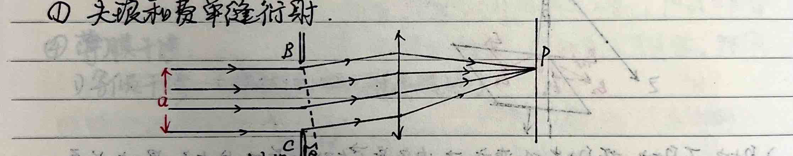
Intensity at point P: $I = I_0 \left(\frac{\sin\beta}{\beta}\right)^2, \quad \beta = \frac{\pi a}{\lambda}\sin\theta \implies \sin\theta = \frac{\beta}{\pi}\frac{\lambda}{a}$. (Can be derived using Fresnel zones)
$$ \begin{cases} \text{Dark fringes: } \sin\beta = 0, \text{ taking } \beta = \pm\pi, \pm 2\pi \dots \\ \quad \text{Yields } \sin\theta = 0 \text{ (central maximum)}, \quad \sin\theta = \pm 1.43\frac{\lambda}{a}, \pm 2.46\frac{\lambda}{a}, \pm 3.47\frac{\lambda}{a} \dots \\ \text{Bright fringes: } \beta = \pm n\pi, \text{ giving } I = 0 \\ \quad \text{Yields } \sin\theta = \pm n\frac{\lambda}{a} \end{cases} $$Define central bright fringe width as the distance between the centers of the two adjacent first-order dark fringes. Then $\Delta x \approx 2f \cdot \theta \approx 2f \cdot \frac{\lambda}{a}$ (when $n=1$).
② Diffraction Grating
(An optical element composed of a large number of parallel slits of equal width and equal spacing is called a grating)
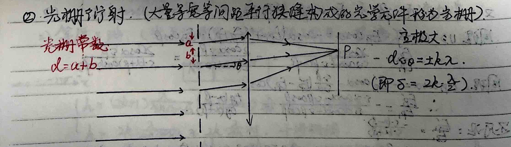
Grating constant $d = a+b$
Principal maxima: $d\sin\theta = \pm k\lambda \quad \left(\text{i.e. } \delta = 2k \cdot \frac{\lambda}{2}\right)$
③ Circular Aperture Diffraction
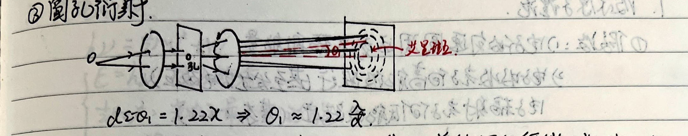
$$ d\sin\theta_1 = 1.22\lambda \implies \theta_1 \approx 1.22\frac{\lambda}{d} $$According to geometrical optics, as long as a lens has an appropriate focal length, any tiny object can be magnified to any extent. But the fact is not so! Because the light emitted from an object point S passing through the lens (circular aperture), its image is no longer a point, but an Airy disk.
Therefore, the minimum angular separation of two object points that the human eye can resolve is $\Delta\theta = \theta_1 = 1.22\frac{\lambda}{d}$. The linear resolution is $\Delta l = d \cdot \Delta\theta = d \cdot 1.22\frac{\lambda}{x}$
($d$: distance of distinct vision $25\text{cm}$, $x$: pupil diameter $2-3\text{mm}$, $\lambda$: wavelength of incident light)
④ X-ray Diffraction
Used to study the internal structure of crystals by diffraction of X-rays in the crystal lattice.
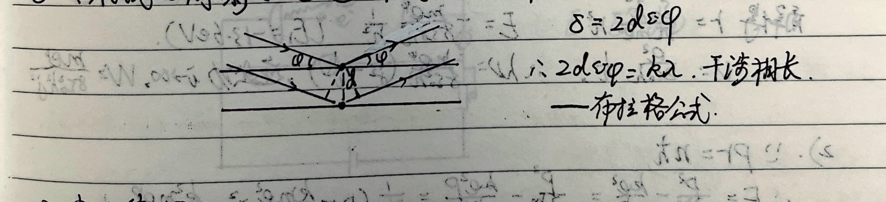
$$ \delta = 2d\sin\varphi $$ $$ \therefore 2d\sin\varphi = k\lambda, \quad \text{constructive interference fringes. — Bragg's law.} $$3. Polarization of Light
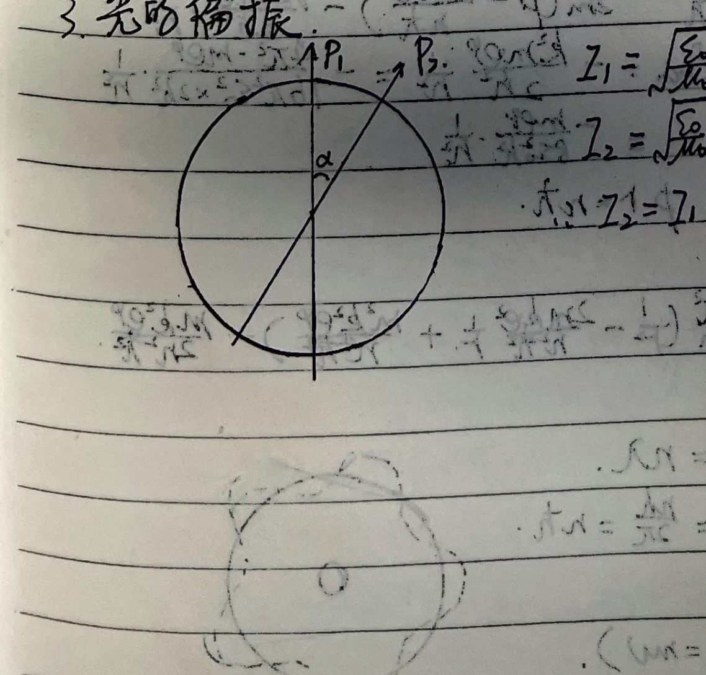
$$ I_1 = \sqrt{\frac{\epsilon}{\mu}} \Sigma E_{1i}^2 $$ $$ I_2 = \sqrt{\frac{\epsilon}{\mu}} \Sigma (E_{1i}\cos\alpha)^2 $$ $$ \therefore I_2 = I_1\cos^2\alpha \quad \text{(Malus's law)} $$Part 5: Quantum Optics
1. Bohr Atomic Theory
① Hypotheses:
- Electrons in uniform circular motion do not radiate energy.
- Electrons absorb photons to jump to higher energy levels (or even cause photoelectric effect), and radiate photons to jump to lower energy levels (ground state: $n=1$).
- $mvr = n\frac{h}{2\pi}, \quad n=1, 2, 3 \dots$
② Inferences and Derivations:
$$ r = \frac{\epsilon_0 h^2}{\pi m e^2}n^2 = n^2 r_1, \quad v = \frac{e^2}{2\epsilon_0 h}\frac{1}{n} = \frac{1}{n}v_1, \quad E = -\frac{me^4}{8\epsilon_0^2 h^2}\frac{1}{n^2} = \frac{1}{n^2}E_1 $$1) $E = \frac{1}{2}mv^2 - \frac{ke^2}{r}$
$$ \because \frac{ke^2}{r^2} = m\frac{v^2}{r} \implies \frac{1}{2}mv^2 = \frac{ke^2}{2r}, \quad v = \sqrt{\frac{ke^2}{mr}} $$ $$ \therefore E = -\frac{ke^2}{2r} $$Substitute $v = \sqrt{\frac{ke^2}{mr}}$ into $mvr = n\frac{h}{2\pi}$, we get $m^2 r^2 \frac{ke^2}{mr} = n^2\frac{h^2}{4\pi^2}$
Solving for $r$: $r = \frac{\epsilon_0 h^2}{\pi m e^2}n^2$. $E = -\frac{me^4}{8\epsilon_0^2 h^2}\frac{1}{n^2} \quad (E_1 = -13.6\text{eV})$.
$v = \frac{e^2}{2\epsilon_0 h}\frac{1}{n}$. $\therefore h\nu = \frac{me^4}{8\epsilon_0^2 h^2}\left(\frac{1}{n^2} - \frac{1}{m^2}\right)$. Work function $n \to \infty, W = \frac{me^4}{8\epsilon_0^2 h^2}$.
2) $\because pr = n\hbar$
$$ \therefore E = \frac{p^2}{2m} - \frac{ke^2}{r} = \frac{p^2}{2m} - \frac{ke^2 p}{n\hbar} = \frac{1}{2m}\left(p - \frac{kme^2}{n\hbar}\right)^2 - \frac{k^2 me^4}{2n^2\hbar^2} $$ $$ \because \text{The energy is most stable when it is minimum,} \quad \therefore E_{\text{min}} = -\frac{k^2 me^4}{2n^2\hbar^2} = -\frac{me^4}{16\pi^2\epsilon_0^2 \cdot 2\hbar^2}\frac{1}{n^2} = -\frac{me^4}{8\epsilon_0^2 h^2}\frac{1}{n^2}. $$3) From uncertainty principle: $\Delta p \cdot \Delta r \approx h, \quad p \cdot r = n\hbar$.
$$ \therefore E = \frac{p^2}{2m} - \frac{ke^2}{r} = \frac{1}{2m}\frac{n^2\hbar^2}{r^2} - \frac{ke^2}{r} = \frac{n^2\hbar^2}{2m}\left(\frac{1}{r^2} - \frac{2mke^2}{n^2\hbar^2}\frac{1}{r} + \frac{m^2 k^2 e^4}{n^4\hbar^4}\right) - \frac{mk^2 e^4}{2n^2\hbar^2} \ge -\frac{k^2 me^4}{2n^2\hbar^2}. $$4) Matter wave condition: $2\pi r = n\lambda$.
$$ \therefore r = \frac{n\lambda}{2\pi} = \frac{n\hbar}{p} \implies pr = \frac{n\hbar}{2\pi} \times 2\pi = n\hbar. $$(Matter wave: de Broglie wave $E = mc^2 = h\nu, p = \frac{h\nu}{c} = \frac{h}{\lambda} = mv$).
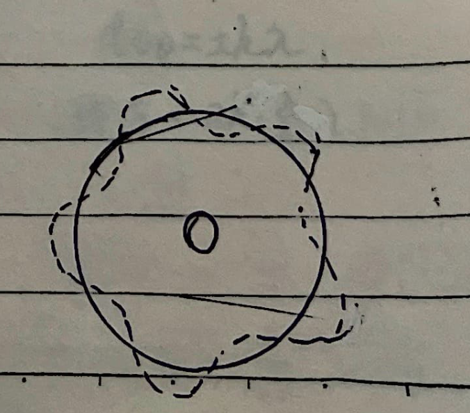
2. Photoelectric Effect
$$ h\nu = \frac{1}{2}mv^2 + W $$ $$ \begin{cases} E = h\nu: \text{ photon energy} \\ \frac{1}{2}mv^2: \text{ maximum initial kinetic energy of photoelectron} \\ W: \text{ work function} \end{cases} $$① Cutoff frequency (red limit): When $v=0$, $\nu_0 = \frac{W}{h}$. For a specific metal, $W$ is constant.
② Saturation current: $\because$ Incident light intensity $\phi = Nh\nu$, and photocurrent intensity $I = nev\Delta S = \frac{N}{\Delta S v \Delta t} \cdot e \Delta S v = \frac{Ne}{\Delta t}$. $\therefore \frac{\phi}{h\nu} = \frac{I\Delta t}{e}$.
③ Reverse stopping voltage: When $eU_0 = \frac{1}{2}mv^2$, the photocurrent reduces to zero, $\therefore U_0 = \frac{h\nu - W}{e}$
3. Inverse Photoelectric Effect
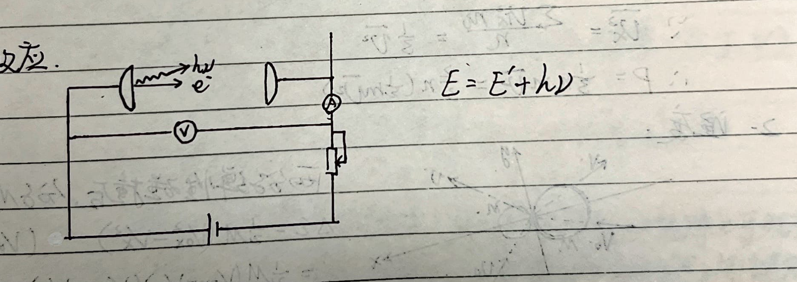
$$ E = E' + h\nu $$